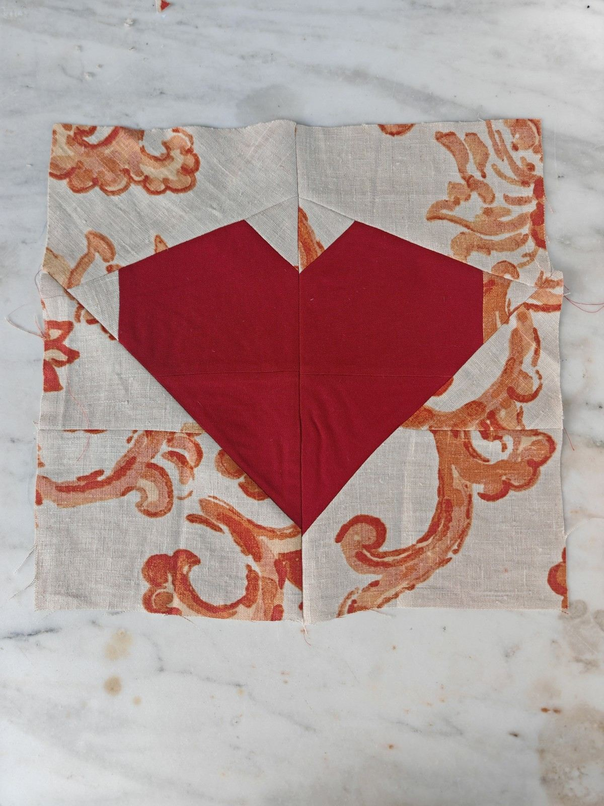
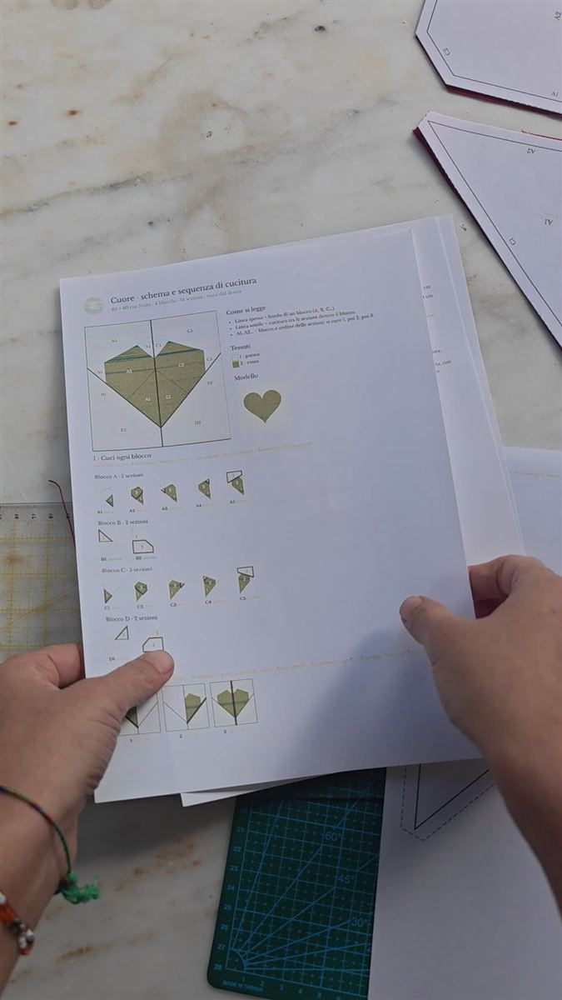
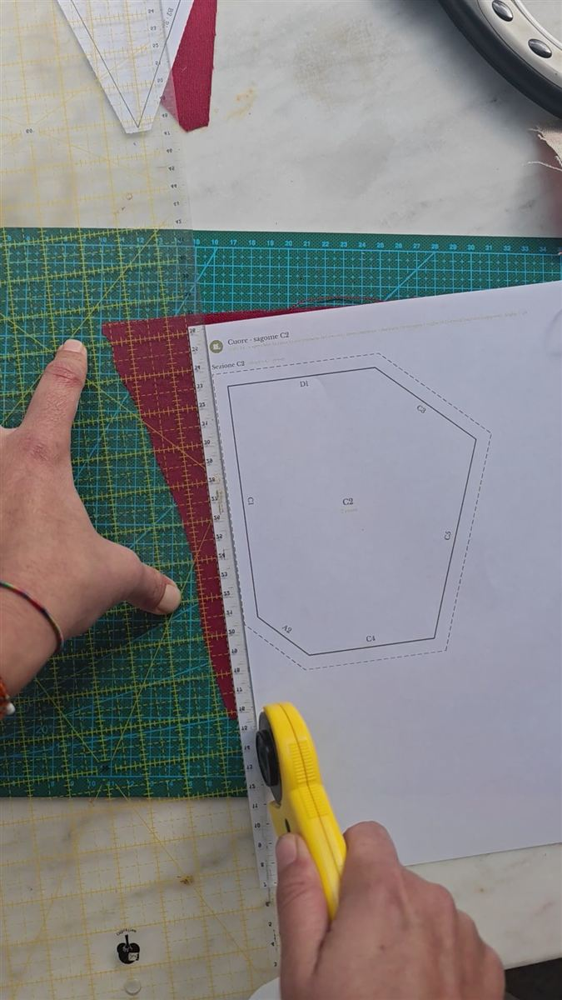
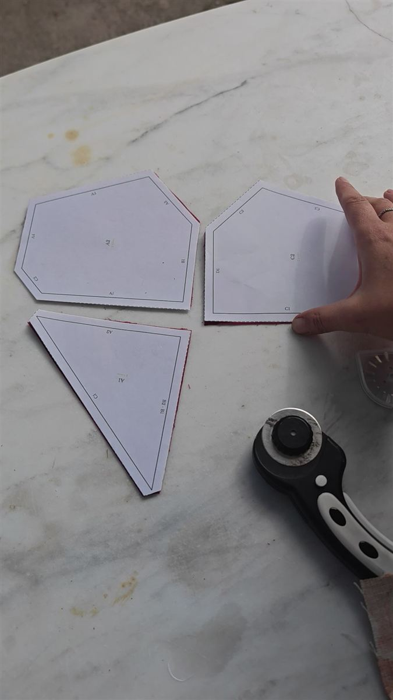
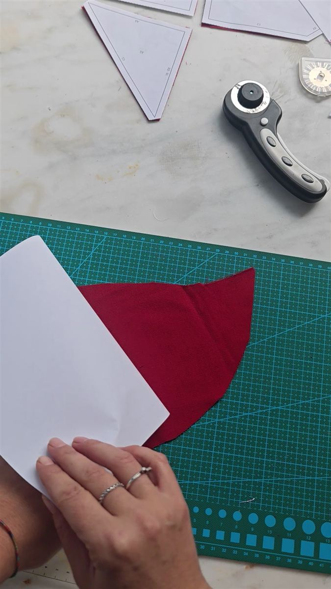

In breve. Il paper piecing è un modo di fare patchwork in cui i pezzi di tessuto si cuciono appoggiati a una sagoma di carta. La carta tiene fermo il tessuto e porta disegnata la linea di cucitura: così anche pezzi piccoli e punte sottili vengono precisi. Alla fine la carta si strappa via. In italiano un nome fisso non c'è: si dice «paper piecing» o «patchwork su carta». La tecnica ha radici antiche, ma la sua forma moderna, con il disegno stampato sul foglio, si è diffusa negli ultimi quarant'anni.

Quilting, patchwork e paper piecing: tre parole diverse
Si usano spesso come sinonimi, ma indicano tre cose diverse.
| Parola | Cosa vuol dire | Esempio |
|---|---|---|
| Quilting (trapuntatura) | Cucire insieme tre strati: sopra, imbottitura, sotto | Una trapunta da letto |
| Patchwork | Unire tanti pezzi di tessuto in una superficie sola | Una coperta fatta di quadrati di stoffe diverse |
| Paper piecing (patchwork su carta) | Fare patchwork appoggiando i pezzi a una sagoma di carta | Un blocco con una stella a punte sottili, o una lettera |
In pratica: il patchwork crea il disegno, il quilting lo trasforma in una coperta imbottita, il paper piecing è uno dei modi per cucire il patchwork con precisione.
Esistono due tecniche con lo stesso nome
Quando si dice «paper piecing» si possono intendere due tecniche.
- English paper piecing (patchwork inglese). La stoffa si avvolge intorno a piccole sagome di cartoncino, di solito esagoni, e i pezzi si cuciono tra loro a mano, dal rovescio. È la tecnica dei quilt «a nido d'ape».
- Foundation paper piecing (patchwork su carta a macchina). Il disegno è stampato su un foglio. La stoffa si appoggia sul retro e si cuce a macchina sulle linee, seguendo l'ordine dei numeri. È la tecnica che uso io, ed è quella di cui parla il resto di questo articolo quando dico «patchwork su carta».
Una storia che parte dalla Sicilia
Prima del patchwork: la trapunta
La parola inglese quilt viene dal latino culcita, cioè cuscino, materasso imbottito. Nel latino medievale si diceva culcita puncta, «materasso punto»: da pungere viene anche il nostro «trapunta», da «trapungere», pungere da parte a parte.
La trapuntatura è antichissima. Su una statuetta d'avorio di un faraone della prima dinastia egizia, oggi al British Museum, si vede un mantello che sembra trapuntato. In Mongolia nel 1924 è stato trovato un tappeto trapuntato datato tra il 100 a.C. e il 200 d.C. Nel Medioevo i soldati europei portavano sotto la cotta di maglia delle giubbe imbottite e trapuntate, il gambeson.
La coperta di Tristano: Sicilia, 1360–1400
La più antica trapunta da letto europea arrivata fino a noi è siciliana. È la coperta di Tristano, cucita in Sicilia nella seconda metà del Trecento: due strati di lino con un'imbottitura di cotone. Racconta in quattordici scene la storia di Tristano e Isotta, e ogni scena ha una scritta in siciliano.
Le figure sono in rilievo grazie al trapunto: dal rovescio si infila cotone in più dentro il disegno, che così si gonfia. Oggi un pezzo è al Victoria and Albert Museum di Londra, un altro al Museo del Bargello di Firenze, che lo chiama «coperta Guicciardini». Secondo alcune studiose le due parti venivano da un'unica grande coperta di circa sei metri per quattro.
Il patchwork più antico d'Italia: il cuscino di Impruneta
Per il patchwork vero e proprio, cioè pezzi di stoffe diverse uniti in un disegno, uno dei più antichi d'Europa è toscano. È un cuscino conservato nel museo della basilica di Impruneta, vicino a Firenze, datato tra la fine del Trecento e l'inizio del Quattrocento. Era del vescovo Antonio degli Agli ed è stato ritrovato nella sua tomba dopo i bombardamenti del 1944. È fatto di piccoli pezzi geometrici di stoffe riusate, e ricorda i pavimenti cosmateschi delle chiese. Alcuni studiosi pensano che per cucirlo sia stata usata una base su cui fissare i pezzi, ma non è certo.
La carta entra nel patchwork: Inghilterra, 1700
La carta come sostegno compare nel Settecento in Inghilterra. Uno dei patchwork datati più antichi della Gran Bretagna, la coperta del 1718 della Quilters' Guild, è cucito sopra sagome di carta. Alcune sono ancora dentro la coperta, e si leggono pezzi di lettere, conti e testi stampati.
Anche la carta era riuso. Fino alla metà dell'Ottocento la carta si faceva con gli stracci, quindi costava, e per le sagome si usava quella che c'era già in casa: lettere vecchie, ricevute, giornali.
Ottocento: Log Cabin e crazy quilt su una base
Nell'Ottocento si diffonde il patchwork cucito su una base di stoffa o di carta, il foundation piecing. I pezzi si cuciono uno alla volta sopra un supporto che li tiene fermi. Così nascono due disegni famosissimi:
- il Log Cabin, «capanna di tronchi», fatto di strisce cucite intorno a un quadrato centrale e citato per iscritto già nel 1863;
- i crazy quilt, patchwork «matti» di ritagli irregolari di seta e velluto, cuciti su una base e decorati con ricami.
Dagli anni Ottanta: il disegno stampato sul foglio
La forma di oggi è recente. Negli anni Settanta e Ottanta chi aveva imparato a cucire su una base comincia a disegnare il blocco direttamente sulla carta e a cucire sulle linee. Così lo stesso disegno si ripete identico, blocco dopo blocco. Negli Stati Uniti Jane Hall e Dixie Haywood pubblicano nel 1989 il loro primo libro, sui blocchi «ananas», e nel 1992 un manuale sul metodo della base, Precision Pieced Quilts Using the Foundation Method. Da lì il patchwork su carta diventa uno dei modi più usati per fare blocchi precisi.
In Italia invece se ne parla ancora pochissimo. Quasi tutti i modelli si trovano in inglese, con le misure in pollici.
La tecnica originale, passo per passo
Nel foundation paper piecing classico la carta fa da base a tutto il blocco: i pezzi di stoffa si cuciono uno dopo l'altro sopra lo stesso foglio.
- Si stampa la sagoma in scala 1:1 e si controlla con il quadrato di prova.
- Si appoggia la stoffa sul retro della carta, dritto verso l'esterno. La sagoma è stampata a specchio, così sul dritto il disegno viene nel verso giusto.
- Si cuce sulla linea stampata, dal lato della carta, con un punto corto (circa 1,5 mm), che buca bene il foglio.
- Si apre e si stira, poi si rifila il margine e si aggiunge il pezzo dopo, sempre in ordine di numero.
- Si uniscono i blocchi e solo alla fine si strappa via la carta.
Perché funziona. La carta non si allunga, quindi anche i pezzi tagliati in sbieco restano dritti. Ogni cucitura è una linea dritta che attraversa tutto il pezzo già cucito: non servono misure perfette sul tessuto, basta seguire la linea.
Come lo faccio io da Repunto
Ho creato Repunto a 20 anni. Oggi lavoro da sola, nel mio laboratorio in campagna vicino a Regalbuto, in provincia di Enna, e cucio soprattutto con le cartelle colore di tappezzeria che le aziende dismettono a fine collezione.
Il patchwork su carta è la tecnica perfetta per questi tessuti, perché i campioni sono piccoli. Un ritaglio che da solo non basta per niente diventa un pezzo preciso di un disegno.
Il metodo classico però ha un punto che confonde quasi tutti: si lavora a specchio, sul retro della carta, e il disegno si vede solo quando si gira il pezzo. Per questo lavoro in un altro modo.
Le sagome sono sul dritto
Quello che vedi sul foglio è quello che vedrai sul quilt, nello stesso verso. Non c'è niente da ribaltare con la testa, e non ci si confonde. Ogni sezione ha la sua sagoma di carta, con 0,75 cm di cucitura già compresi, e su ogni lato è scritto il nome della sezione da attaccare lì.

Si taglia il tessuto insieme alla carta
Appoggio la sagoma sul dritto del tessuto e taglio i due strati insieme, con la taglierina e il righello. Il pezzo di stoffa esce già della forma giusta, margine compreso.

Poi dispongo i pezzi sul tavolo come un puzzle, ognuno con la sua carta sopra: si vede subito dove va ciascuno.

Poi i pezzi si cuciono insieme
I pezzi si cuciono tra loro seguendo i nomi scritti sui lati. Se il tessuto è un cotone bello fermo e rigido, la carta si può anche togliere prima di cucire: il pezzo tiene la forma da solo.

C'è qualcosa che mi piace molto in questa storia: già nel Settecento le sagome si facevano con le lettere e i conti vecchi. Il patchwork su carta è nato dal riuso. Per questo sto preparando i primi modelli in italiano, con le misure in centimetri, pensati per i tessuti che abbiamo già in casa.
Domande frequenti sul paper piecing
Cos'è il paper piecing?
È un modo di fare patchwork in cui i pezzi di tessuto si cuciono appoggiati a una sagoma di carta con il disegno stampato. Alla fine la carta si toglie. Serve a ottenere punte e incroci precisi anche con pezzi piccoli.
Come si dice paper piecing in italiano?
Non c'è un termine fisso. Si usa «paper piecing» in inglese, oppure «patchwork su carta» o «cucito su carta».
Che differenza c'è tra English paper piecing e foundation paper piecing?
Nell'English paper piecing la stoffa si avvolge intorno a sagome di cartoncino e si cuce a mano. Nel foundation paper piecing la stoffa si cuce a macchina sulle linee stampate di un foglio, seguendo l'ordine dei numeri.
Il paper piecing è adatto ai principianti?
Sì, se si parte da un disegno semplice, con pochi pezzi e pezzi non troppo stretti (da 2 cm in su). Nel metodo classico la parte che confonde all'inizio è il lavoro «a specchio»: si cuce sul retro e il disegno si vede sul dritto. Con le sagome sul dritto questo problema non c'è.
Che carta si usa per il paper piecing?
Va bene la normale carta da stampante, che si strappa facilmente se si cuce con un punto corto. Esistono anche carte sottili apposta, più facili da togliere.
Qual è la trapunta più antica d'Europa?
La più antica trapunta da letto europea arrivata fino a noi è la coperta di Tristano, cucita in Sicilia tra il 1360 e il 1400. È divisa tra il Victoria and Albert Museum di Londra e il Museo del Bargello di Firenze.
Se vuoi provare, ogni mese nella mia newsletter spiego passo per passo un progetto da cucire con quello che hai già in casa. Ti iscrivi dalla home di repunto.it.
Fonti
- Victoria and Albert Museum, introduzione a quilting e patchwork
- Coperta di Tristano · scheda del Textile Research Centre
- Storia del quilting
- Etimologia di «trapunta» · culcita puncta
- Cuscino di Impruneta · Piccoli Grandi Musei · Evans e Owen-Crocker, Medieval Clothing and Textiles 8
- Coperta del 1718, Quilters' Guild
- English paper piecing · Selvedge
- Foundation piecing
- Log Cabin
- Dixie Haywood · Jane Hall